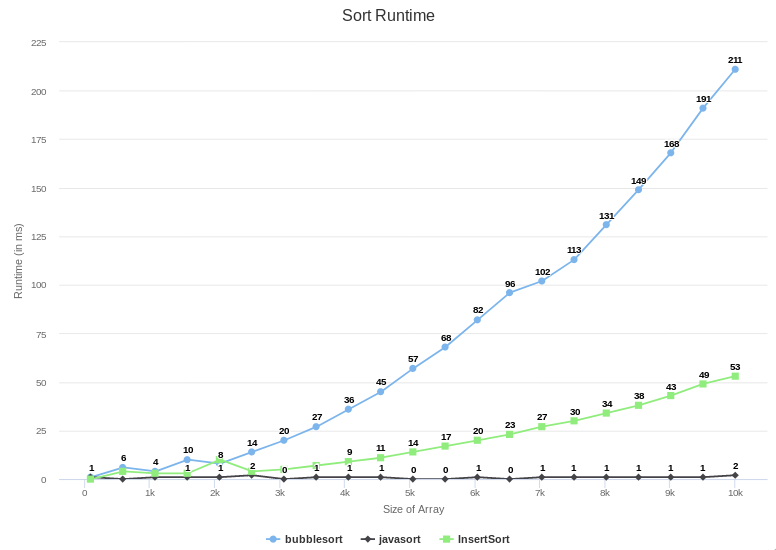

Understand the performance of sorting algorithms by implementing and benchmarking them.
We will be sorting arrays of integers
Bridges documentation BFSBenchmark documentation
Bridges documentation SortingBenchmark documentation